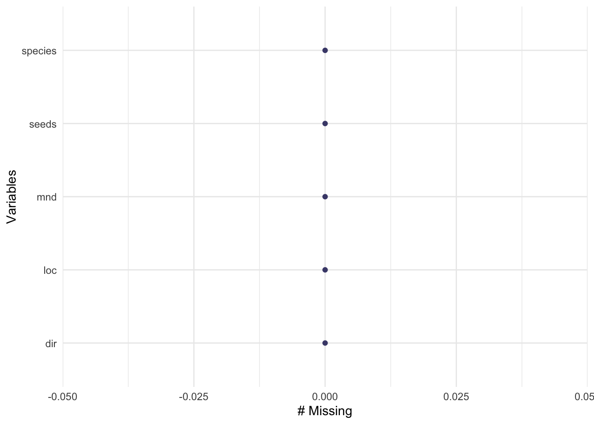
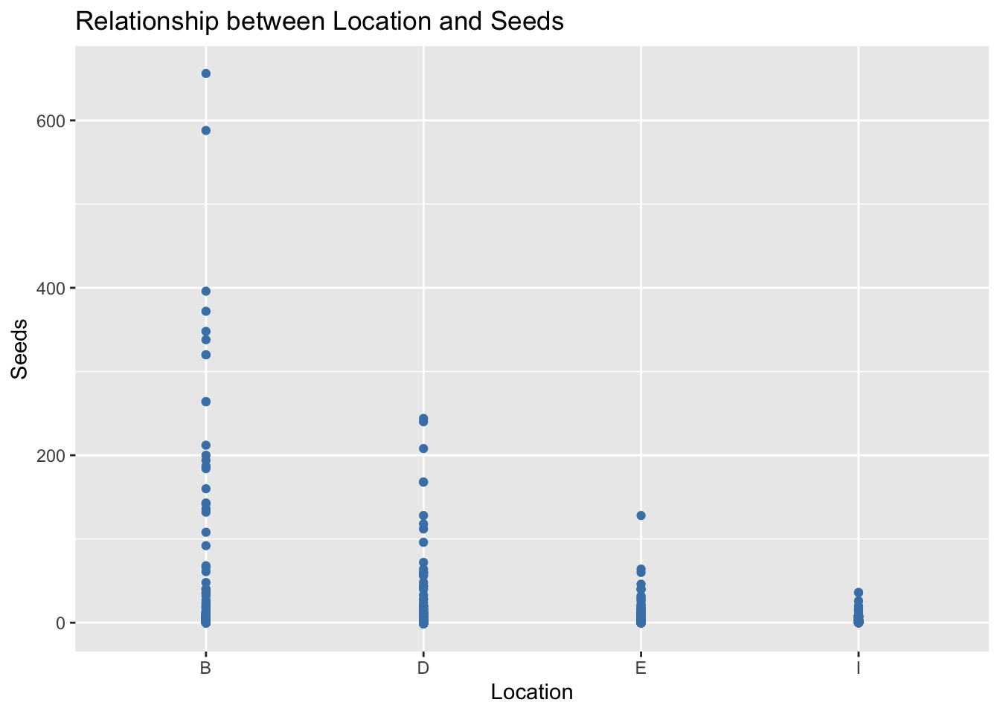

Disturbance plays a vital biological role in shaping plant community structure, and small-scale disturbances caused by animals can increase heterogeneity and species diversity. Kangaroo rat (Dipodomys spectabilis) mounds are unique small-scale disturbances that support distinct plant communities compared to surrounding habitats (Guo). The seed bank, often overlooked in plant communities, is an important trait for plant species’ persistence in unpredictable environments (Fitch). To understand the impact of kangaroo rat disturbances on plant communities in the Chihuahuan Desert grassland, we studied the composition of the seed bank for eight taxa on and off kangaroo rat mounds. Our objective was to determine if kangaroo rat mounds accumulate more seeds and exhibit different seed compositions compared to the adjacent grassland and our findings revealed that kangaroo rat mounds accumulated more seeds and supported different seed compositions, suggesting their role in promoting plant diversity and altering plant structure within communities (Koontz). Our null hypothesis is that the eight taxa will have seed banks that do not differ between mounds and off mounds and that mounds will not have high seed numbers of early successional plant species; our alternative hypothesis is that the eight taxa will have seed banks that differ between mounds and off mounds and that mounds will have high seed numbers of early successional plant species.
Methods
Code
# should haveslibrary(MASS) library(lme4)library(glmmTMB)library(tidyverse)library(DHARMa)library(lmtest)library(here)library(janitor)library(dplyr)library(ggeffects)library(performance)library(naniar)library(flextable)library(car)library(broom)library(corrplot)library(AICcmodavg)library(GGally)library(skimr)# would be nice to havelibrary(MuMIn)#library(equatiomatic)library(corrplot)
Code
kangaroo_rats <-read_csv(here("data", "dat_for_prob1.csv")) %>%# make the column names cleanerclean_names()# cleaning and wranglingdata <- kangaroo_rats %>%# remove rows with missing valuesdrop_na()
Code
# check what variables are missing datagg_miss_var(kangaroo_rats)

Code
# there is nothing missing
Figure 1. Visualizing Missing Data. Using [gg_miss_var] to evaluate missing data from data set, it is found that there is no missing data.
# other tools for count (discrete) data:# Kruskal-Wallis test (non-parametric alternative to ANOVA)kruskal_kangaroo <-kruskal.test(seeds ~ loc, data = data)kruskal_kangaroo
Kruskal-Wallis rank sum test
data: seeds by loc
Kruskal-Wallis chi-squared = 21.932, df = 3, p-value = 6.738e-05
The summary statistics of the “seeds” variable in the “kangaroo_rats” dataset showed that there were no missing values, indicating a complete dataset. The variable had a mean seed count of 7.52, with a standard deviation of 38.1. The minimum seed count was -1.6, the first quartile was 0, the median was 0.1, the third quartile was 3, and the maximum seed count was 656. The histogram displayed a highly skewed distribution, with the majority of seed counts being concentrated at lower values. For the assumption checks, we first conducted a normality assumption check with the Shapiro-Wilk test. The Shapiro-Wilk test revealed that the “seeds” variable did not follow a normal distribution (W = 0.18134, p < 2.2e-16). This deviation from normality suggested that parametric tests relying on normality assumptions may not be appropriate for this variable. Next we used Levene’s test to assess the homogeneity of variances across different locations. The test indicated a significant difference in variances among the locations (F = 14.474, p < 0.001). The violation of homogeneity of variances assumption suggested the need for caution when interpreting the results of subsequent statistical tests. For statistical tests, we first used a one-way ANOVA. The one-way ANOVA revealed a significant difference in seed counts among the different locations (F = 14.46, p < 2.7e-09). The analysis indicated that the location factor had a significant effect on the seed counts of kangaroo rats. We also used a Post hoc test as a statistical test. Tukey’s HSD test was employed to identify pairwise differences between locations.
Results
The test results showed significant differences in seed counts between locations B and D, B and E, and B and I (p < 0.001). However, no significant differences were observed between locations D and E, D and I, and E and I (p > 0.05). These findings suggest that some locations have significantly different seed counts compared to others. Lastly, we used a non-parametric alternative, the Kruskal-Wallis test as an alternative to ANOVA to evaluate the differences in seed counts among locations. The test indicated a significant difference in seed counts among locations (chi-squared = 21.932, df = 3, p = 6.738e-05). This result further supported the conclusion that the location factor had a significant impact on seed counts. Based on the statistical tests, the null hypothesis (H0) stating that there is no difference in seed counts between locations was rejected. The analyses provided evidence of significant variations in seed counts among the different locations. These results highlight the importance of considering location as a factor influencing seed counts in kangaroo rats. The findings suggest that the locations might have distinct ecological conditions or factors affecting seed availability, resulting in variations in the reproductive success of kangaroo rats.
Visualization
Code
ggplot(kangaroo_rats, aes(x = loc, y = seeds)) +geom_point(color ='steelblue') +labs(x ='Location', y ='Seeds') +ggtitle('Relationship between Location and Seeds')

Figure 1. Relationship between location and Seeds. Scatter plot depicting the relationship between the location of kangaroo rat mounds and the total number of seeds. Each data point represents a mound location, with the x-axis representing the location and the y-axis representing the total seed count. The points are shown in a steel blue color, highlighting the variability in seed numbers across different mound locations.
Code
anova_result <-aov(seeds ~ loc, data = data)anova_result
Call:
aov(formula = seeds ~ loc, data = data)
Terms:
loc Residuals
Sum of Squares 61401.9 2201772.7
Deg. of Freedom 3 1556
Residual standard error: 37.61676
Estimated effects may be unbalanced
Table 1. ANOVA table. The table presents the sum of squares, degrees of freedom, and residuals for the terms included in the model. The residual standard error is reported as 37.61676, representing the average deviation of the observed values from the fitted model.
Interpretation of Results
From conducting a one way ANOVA test, Tukey’s HSD test, and a Kruskal-Wallis test on the data collected, a significant difference in seed counts among locations was found. This implied the differing micro-habitats within kangaroo rat mounds had a significant impact on seed counts, which could result in variations in species distribution patterns across the grassland. The locations with higher seed counts may provide more favorable conditions in their soil characteristics, moisture levels, or nutrient availability. The presence of kangaroo rats and their mounds can influence seed dispersal patterns, facilitating the movement of seeds across the landscape and affecting the establishment and persistence of plant populations. The varying micro-habitats having such a significant impact on seed count should be accounted for in comprehending the ecological dynamics of the Chihuahuan Desert grassland or any other ecosystem where kangaroo rats are present. It allows us to recognize the complex interactions between species and how they shape the structure and functioning of ecosystems. This knowledge can aid in conservation efforts, land management practices, and the preservation of biodiversity within these habitats.
Works Cited
Fitch, Henry S. “Habits and Economic Relationships of the Tulare Kangaroo Rat.” Journal of Mammalogy 29, no. 1 (1948): 5–35. https://doi.org/10.2307/1375277.
Guo, Q. Effects of bannertail kangaroo rat mounds on small-scale plant community structure. Oecologia106, 247–256 (1996). https://doi.org/10.1007/BF00328605
Koontz, Terri, and Heather Simpson. “The Composition of Seed Banks on Kangaroo Rat (Dipodomys Spectabilis) Mounds in a Chihuahuan Desert Grassland.” ScienceDirect, 18 Apr. 2010, doi.org/10.1016/j.jaridenv.2010.03.008.